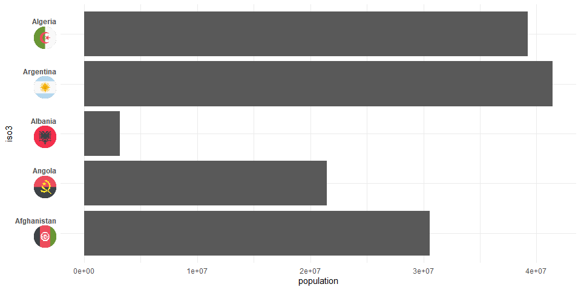

This is very much work in progress. I apologize for incomplete documentation.
Installation
You can install ggoxford from github with:
# install.packages("devtools")
devtools::install_github("schliebs/ggoxford")Example
This is a basic example of how to add country flags to bar plots:
library(tidyverse)
library(ggoxford)
library(ggtext)
wpop2013 <-
tidyr::population %>%
filter(year == 2013) %>%
filter(population > 1e6) %>%
mutate(iso3 = countrycode::countrycode(country,
origin = "country.name.en",
destination = "iso3c")
)
head(wpop2013,10)
#> # A tibble: 10 x 4
#> country year population iso3
#> <chr> <int> <int> <chr>
#> 1 Afghanistan 2013 30551674 AFG
#> 2 Albania 2013 3173271 ALB
#> 3 Algeria 2013 39208194 DZA
#> 4 Angola 2013 21471618 AGO
#> 5 Argentina 2013 41446246 ARG
#> 6 Armenia 2013 2976566 ARM
#> 7 Australia 2013 23342553 AUS
#> 8 Austria 2013 8495145 AUT
#> 9 Azerbaijan 2013 9413420 AZE
#> 10 Bahrain 2013 1332171 BHR
ggplot(data = wpop2013 %>% slice(1:10),
aes(x = iso3, y = population)) +
geom_bar(stat = "identity") +
theme_minimal() +
geom_axis_flags(breaks = wpop2013$iso3,
labels = wpop2013$country,
country_icons = wpop2013$iso3,
axis = "x",
width = 30,
lineheight = 2,
fontface = "bold"
)
Now, the package also supports an early version of a y-axis functionality:
ggplot(data = wpop2013 %>% slice(1:5),
aes(x = population, y = iso3)) +
geom_bar(stat = "identity") +
theme_minimal() +
geom_axis_flags(breaks = wpop2013$iso3,
labels = wpop2013$country,
country_icons = wpop2013$iso3,
axis = "y",
width = 30,
lineheight = 2,
fontface = "bold"
)
Also, the text labels can be disabled via icon_only = T:
ggplot(data = wpop2013 %>% slice(1:10),
aes(x = population, y = iso3)) +
geom_bar(stat = "identity") +
theme_minimal() +
geom_axis_flags(breaks = wpop2013$iso3,
labels = wpop2013$country,
country_icons = wpop2013$iso3,
axis = "y",
icons_only = T,
width = 30,
lineheight = 2,
fontface = "bold"
)Or with a few details added (now for the last 10 countries)
set.seed(123)
ggplot(data = wpop2013 %>% sample_n(10) ,
aes(x = iso3, y = population)) +
geom_bar(stat = "identity") +
geom_text(aes(label = paste0(round(population/1e6),"m")),vjust = -0.25)+
scale_y_continuous(breaks = seq(0e6,80e6,10e6),
labels = scales::comma(seq(0e6,80e6,10e6))) +
theme_minimal() +
labs(x = NULL,y = "Population",title = "Population in 2013")+
geom_axis_flags(breaks = wpop2013$iso3,
labels = wpop2013$country,
country_icons = wpop2013$iso3,
width = 30,
lineheight = 2,
fontface = "bold"
)